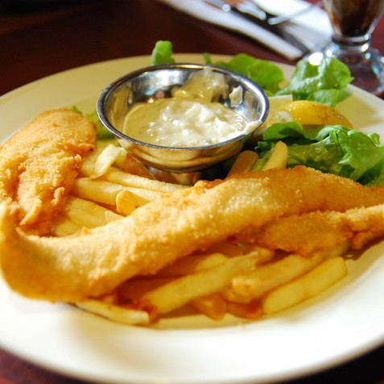

Fish & Chips
Es uno de los rebozados que mejor resultado dan para freír pescados blancos, porque quedan crujientes por fuera, jugosos por dentro y apenas absorben aceite. Lo habitual es acompañarlos con una crema de guisantes con menta, pero también valen unos guisantes cocidos con nuestra salsa favorita como puede ser una holandesa.